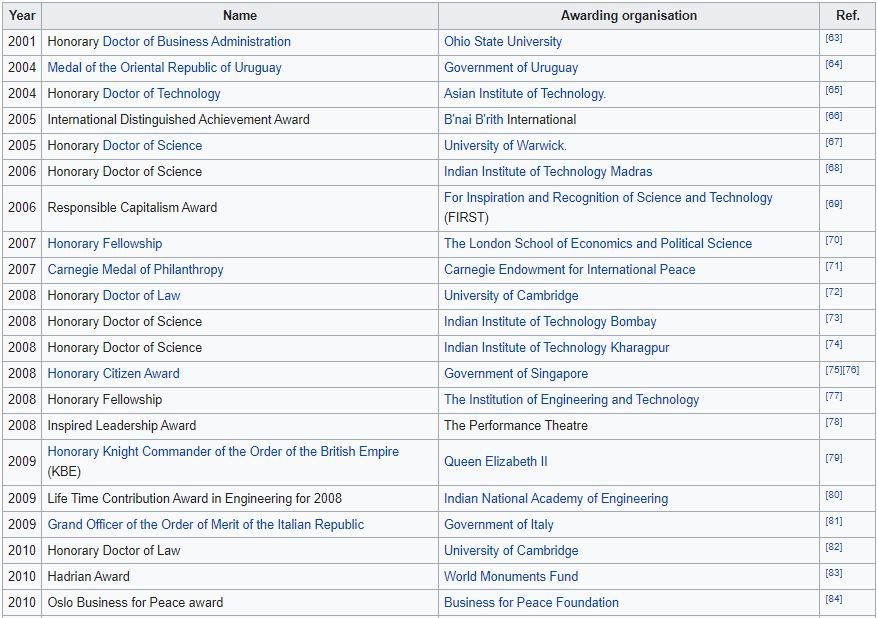

Ratan Naval Tata (born 28 December 1937) is an Indian industrialist, philanthropist, and a former chairman of Tata Sons. He was also chairman of Tata Group, from 1990 to 2012, and again, as interim chairman, from October 2016 through February 2017, and continues to head its charitable trusts.[3][4] He is the recipient of two of the highest civilian awards of India, the Padma Vibhushan (2008) and Padma Bhushan (2000).[5]
Born in 1937, he is a scion of the Tata family, and son of Naval Tata who was later adopted by Ratanji Tata, son of Jamsetji Tata, the founder of Tata Group. He is an alumnus of the Cornell University College of Architecture and Harvard Business School through the Advanced Management Program that he completed in 1975.[6] He joined his company in 1961 when he used to work on the shop floor of Tata Steel, and was the apparent successor to J. R. D. Tata upon the latter's retirement in 1991. He got Tata Tea to acquire Tetley, Tata Motors to acquire Jaguar Land Rover, and Tata Steel to acquire Corus, in an attempt to turn Tata from a largely India-centrist group into a global business.
Early Life
Ratan Tata was born in Bombay, now Mumbai, on 28 December 1937,[7] and is the son of Naval Tata (born in Surat). His biological maternal grandmother had been the sister of Hirabai Tata, wife of group founder Jamsetji Tata. His biological grandfather, Hormusji Tata, had belonged to the broader Tata family; Ratan therefore was a Tata by birth. Parents Naval and Sonoo separated in 1948 when Ratan was 10, and he was subsequently raised by the widow of Sir Ratanji Tata, his grandmother, Navajbai Tata, who formally adopted him through the J. N. Petit Parsi Orphanage.[8] He has a half-brother, Noel Tata (from Naval Tata's second marriage with Simone Tata), with whom he was raised. His first language is Gujarati.[9]
He studied at the Campion School, Mumbai till the 8th class, followed by Cathedral and John Connon School, Mumbai and at Bishop Cotton School in Shimla,[10] and, in 1955, graduated from Riverdale Country School in New York City.[11][12] In 1959, he then received a degree in Architecture from Cornell University, and in 1975, attended the seven-week Advanced Management Program of Harvard Business School — an institution which he has since endowed.[13][14]
Promoted to management during the 1970s, Ratan achieved initial success by turning Group company National Radio and Electronics (NELCO) around, only to see it collapse during an economic slowdown.[15][16] In 1991, J. R. D. Tata stepped down as chairman of Tata Sons, naming him his successor. When he settled down into the new role, he faced stiff resistance from many companies heads, some of whom had spent decades in their respective companies and rose to become very powerful and influential due to the freedom to operate under JRD Tata. He began replacing them by setting a retirement age, and then made individual companies report operationally to the group office and made each contribute some of their profit to build and use the Tata group brand. Innovation was given priority and younger talent was infused and given responsibilities.[17] Under his stewardship, overlapping operations in group companies were streamlined into a synergised whole,[18] with the salt-to-software group exiting unrelated businesses to take on globalisation
Ratan Tata

Tata in 2010
| Born | Ratan Naval Tata
28 December 1937 (age 83)
Bombay,[1] Bombay Presidency, British India (present-day Mumbai, Maharashtra, India) |
|---|
| Alma mater | Cornell University (BArch) |
|---|
| Occupation | Businessman.philanthropist.investor |
|---|
| Title | Chairman Emeritus, Tata Sons and Tata Group |
|---|
| Term | (1991–2012)
(2016–2017) |
|---|
| Predecessor | JRD Tata |
|---|
| Successor | Cyrus Mistry (2012)
Natarajan Chandrasekaran (2017–present |
|---|
| Parent(s) | Naval Tata |
|---|
| Relatives | Tata family |
|---|
| Awards | Padma Vibhushan (2008)
Padma Bhushan (2000) |
|---|
During the 21 years he led the Tata Group, revenues grew over 40 times, and profit, over 50 times.[15] Where sales of the group as a whole, overwhelmingly came from commodities when he took over, the majority sales came from brands when he exited.[19][20] He boldly got Tata Tea to acquire Tetley, Tata Motors to acquire Jaguar Land Rover and Tata Steel to acquire Corus. All this turned Tata from a largely India-centric group into a global business, with over 65% revenues coming from operations and sales in over 100 countries.[15][21] He conceptualised the Tata Nano car.[17] In 2015, He explained in an interview for the Harvard Business School's Creating Emerging Markets project, the development of the Tata Nano was significant because it helped put cars at a price-point within reach of the average Indian consumer.[2
Ratan Tata resigned his executive powers in the Tata group on 28 December 2012, upon turning 75, appointing as his successor, Cyrus Mistry, the 44-year-old son of Pallonji Mistry of the Shapoorji Pallonji Group, the largest individual shareholder of the group and related by marriage.[23][24] On 24 October 2016, Cyrus Mistry was removed as the chairman of Tata Sons and Ratan Tata was made interim chairman. The decision went through intense media scrutiny that made many scrutinize the root causes of the sudden removal, and the resultant crisis.[25] A selection committee was formed to find a successor. The selection committee consisted of Mr. Tata, TVS Group head Venu Srinivasan, Amit Chandra of Bain Capital, former diplomat Ronen Sen and Lord Kumar Bhattacharya. All of them, except Mr. Bhattacharya, were on the board of Tata Sons.[26] On 12 January 2017, Natarajan Chandrasekaran was named as the chairman of Tata Sons, a role he assumed in February 2017.
Tata invested personal savings in Snapdeal – one of India's leading e-commerce websites –and, in January 2016, Teabox, an online premium Indian Tea seller,[27] and CashKaro.com, a discount coupons and cash-back website.[28] He has made small investments in both early and late stage companies in India, such as INR 0.95 Cr in Ola Cabs.[29] In April 2015, it was reported that Tata had acquired a stake in Chinese smartphone startup Xiaomi.[30] In 2016, he invested in Nestaway[31] an online portal to find fully furnished flats for bachelors which later acquired Zenify to start family rental segment and online pet care portal, Dogspot.[32][33][34] Tata Motors rolled out the first batch of Tigor Electric Vehicles from its Sanand Plant in Gujarat, regarding which Ratan Tata said, "Tigor indicates a willingness to fast-forward India's electric dream. The government has set an ambitious target to have only electric cars by 2030."[35]
Tata Sons vs. Cyrus Mistry
In one of the most dramatic developments in the recent past, the board of directors of Tata Group on 24 October 2016 voted for the removal of its chairman Cyrus Mistry with immediate effect and made Ratan Tata the interim chairman, and in February 2017, Mistry was removed as a director for Tata Sons.[36] The National Company Law Appellate Tribunal (NCLAT) had decided in December 2019 that the removal of Cyrus Mistry as the Chairman of Tata Sons was illegal and that he should be reinstated.[36] India's Supreme Court heard an appeal by the $111-billion conglomerate to quash the NCLAT order that directed the Tata group to rehire the man it fired as chairman. Ratan Tata is personally leading the charge in the case, and filed a separate petition challenging the ruling in the Supreme Court.[37] The Supreme Court has stayed the NCLAT order that allowed Cyrus Mistry to be reinstated as Tata Sons chairman in January 2020.[36] However the Supreme Court upheld the dismissal of Cyrus Mistry.[38]
Philanthropy
Tata is a supporter of education, medicine and rural development, and considered a leading philanthropist in India.[39][40][41] Tata supported University of New South Wales Faculty of Engineering to develop capacitive deionization to provide improved water for challenged areas.[42][43]
Tata Hall[44] at the University of California, San Diego (UC San Diego), opened in November 2018, houses facilities for the biological and physical sciences and is the home of the Tata Institute for Genetics and Society. The Tata Institute for Genetics and Society is a binational institution that coordinates research between UC San Diego and research operations in India to assist in societal and infrastructure development in the area of combating vector-borne diseases. Tata Hall is named in recognition of a generous $70 million gift from Tata Trusts.[c
Tata Education and Development Trust, a philanthropic affiliate of Tata Group, endowed a $28 million Tata Scholarship Fund that will allow Cornell University to provide financial aid to undergraduate students from India. The scholarship fund will support approximately 20 scholars at any given time and will ensure that the very best Indian students have access to Cornell, regardless of their financial circumstances. The scholarship will be awarded annually; recipients will receive the scholarship for the duration of their undergraduate study at Cornell.[45]
In 2010, Tata Group companies and Tata charities donated $50 million for the construction of an executive center at Harvard Business School (HBS).[46] The executive center has been named Tata Hall, after Ratan Tata (AMP '75), chairman emeritus of Tata Sons.[14] The total construction costs have been estimated at $100 million.[47] Tata Hall is located in the northeast corner of the HBS campus, and is devoted to the Harvard Business School's mid-career Executive Education program. It is seven stories tall, and about 155,000 gross square feet. It houses approximately 180 bedrooms, in addition to academic and multi-purpose spaces.[
Tata Consultancy Services (TCS) has given the largest ever donation by a company to Carnegie Mellon University (CMU) for a facility to research in cognitive systems and autonomous vehicles. TCS donated $35 million for this grand 48,000 square-foot building that is called TCS Hall.[4
In 2014, Tata Group endowed the Indian Institute of Technology, Bombay and formed the Tata Center for Technology and Design (TCTD) to develop design and engineering principles suited to the needs of people and communities with limited resources. They gave ₹950 million to the institute which was the largest ever donation received in its history.
Tata Trusts under the Chairmanship of Ratan Tata provided a grant of ₹750 million to the Centre for Neuroscience, Indian Institute of Science to study mechanisms underlying the cause of Alzheimer's disease, and to evolve methods for its early diagnosis and treatment. This grant was to be spread over 5 years starting in 2014
Tata Group, under the leadership of Ratan Tata formed the MIT Tata Center of Technology and Design at Massachusetts Institute of Technology (MIT) with a mission to address the challenges of resource-constrained communities, with an initial focus on India
Board memberships and affiliations
He was the interim chairman of Tata Sons. He continues to head the main two Tata trusts Sir Dorabji Tata and Allied Trusts and Sir Ratan Tata Trust and their allied trusts, with a combined stake of 66% in Tata Sons, Tata group's holding company.
He has served in various capacities in organizations in India and abroad. He is a member of Prime Minister's 'Council on Trade and Industry' and the 'National Manufacturing Competitiveness Council'. He is on the jury panel of Pritzker Architecture Prize[56] – considered to be one of the world's premier architecture prizes
He is a director on the boards of Alcoa Inc., Mondelez International[57] and Board of Governors of the East–West Center. He is also a member of the board of trustees of University of Southern California, Harvard Business School Board of Dean's Advisors, X Prize[58] and Cornell University. He is a member on the board of International Advisory Council at Bocconi University[59
He is also a member of the Harvard Business School India Advisory Board (IAB) since 2006 and previously a member of the Harvard Business School Asia-Pacific Advisory Board (APAB) 2001–2006
In October 2016, Tata Sons removed Cyrus Mistry as its chairman, nearly 4 years after he took over the reins of the over $100 billion conglomerate, Ratan Tata made a comeback, taking over the company's interim boss for 4 months. On 12 January 2017, Natarajan Chandrasekaran was named as the chairman of Tata Sons, a role he assumed in February 2017.
Honours and awards
Ratan Tata received the Padma Bhushan in 2000 and Padma Vibhushan in 2008, the third and second highest civilian honours awarded by the Government of India
Other notable awards include:

Personal life
In 2011, Ratan Tata stated, "I came close to getting married four times and each time I backed off in fear or for one reason or another." Ratan Tata stated recently that he loved one girl in Los Angeles while working there. As his family member was ill, so he had to return to India but the parents of the girl didn't allow her to come to India with Tata. So Tata stood by his commitment and never married
In popular culture
Mega Icons (2018-2020), an Indian documentary television series on National Geographic about prominent Indian personalities, dedicated an episode to Ratan Tata's contributions.[107] He has also appeared Rendevouz with Simi Garewal an informal chat show hosted by Indian actress Simi Garewal